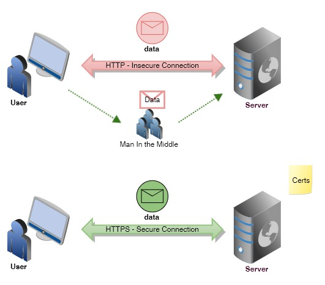

What is W3C, HTML and CSS?
W3C Stands for "World Wide Web Consortium." The W3C is an international community that includes a full-time staff, industry experts, and several member organizations. These groups work together to develop standards for the World Wide Web.
The mission of the W3C is to lead the Web to its full potential by developing relevant protocols and guidelines. This is achieved primarily by creating and publishing Web standards. By adopting the Web standards created by the W3C, hardware manufacturers and software developers can ensure their equipment and programs work with the latest Web technologies. For example, most Web browsers incorporate several W3C standards, which allows them to interpret the latest versions of HTML and CSS code. When browsers conform to the W3C standards, it also helps Web pages appear consistent across different browsers.
Besides HTML and CSS standards, the W3C also provides standards for Web graphics, as well as audio and video on the Web. The organization also develops standards for Web applications, Web scripting, and dynamic content. Additionally, the W3C provides privacy and security guidelines that websites should follow.
Hypertext Markup Language (HTML) is the standard markup language for documents designed to be displayed in a web browser. It can be assisted by technologies such as Cascading Style Sheets (CSS) and scripting languages such as JavaScript.
HTTPS stands for Hyper Text Transfer Protocol Secure. It is the primary protocol used to send data between a web browser and a website. HTTPS is encrypted in order to increase security of data transfer. This is particularly important when users transmit sensitive data, such as by logging into a bank account, email service, or health insurance provider. It uses the port no. 443 for Data Communication. It allows the secure transactions by encrypting the entire communication with SSL. It is a combination of SSL/TLS protocol and HTTP.
HTTPS also allows you to create a secure encrypted connection between the server and the browser. It offers the bi-directional security of Data. This helps you to protect potentially sensitive information from being stolen. Any website, especially those that require login credentials, should use HTTPS.

HTTPS uses an encryption protocol to encrypt communications. The protocol is called Transport Layer Security (TLS), although formerly it was known as Secure Sockets Layer (SSL). This protocol secures communications by using what’s known as an asymmetric public key infrastructure. This type of security system uses two different keys to encrypt communications between two parties:
1. The private key - this key is controlled by the owner of a website and it’s kept, as the reader may have speculated, private. This key lives on a web server and is used to decrypt information encrypted by the public key.
2. The public key - this key is available to everyone who wants to interact with the server in a way that’s secure. Information that’s encrypted by the public key can only be decrypted by the private key.
HTTPS prevents websites from having their information broadcast in a way that’s easily viewed by anyone snooping on the network. When information is sent over regular HTTP, the information is broken into packets of data that can be easily “sniffed” using free software. This makes communication over the an unsecure medium, such as public Wi-Fi, highly vulnerable to interception. In fact, all communications that occur over HTTP occur in plain text, making them highly accessible to anyone with the correct tools, and vulnerable to on-path attacks.

In fact, all communications that occur over HTTP occur in plain text, making them highly accessible to anyone with the correct tools, and vulnerable to on-path attacks. With HTTPS, traffic is encrypted such that even if the packets are sniffed or otherwise intercepted, they will come across as nonsensical characters.